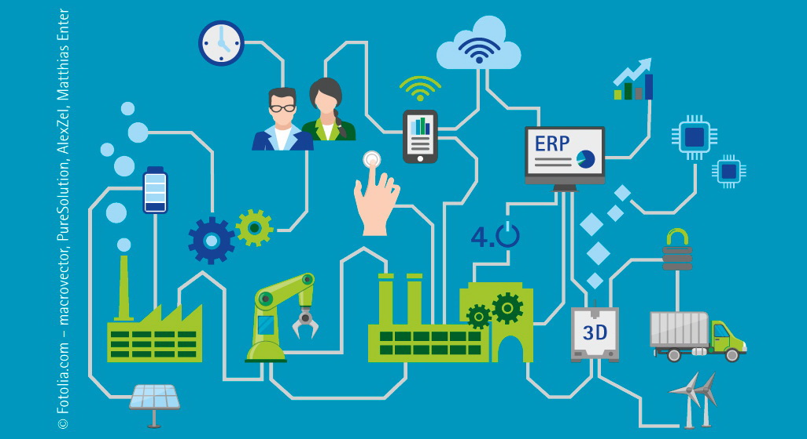

-

-

La Industria 4.0 ¡Actualizate con este tema!
Aprende conceptos basicos sobre este interesante tema informatico de la actualidad, te lo resumimos de una manera sencilla... :)
¿Que es la industria 4.0?
El concepto de industria 4.0 consiste en la introducción de las tecnologías digitales en las fábricas. Es la forma que hay de llamar al fenómeno de transformación digital aplicado a industria de producción. Así de sencillo y simple. Si durante años se ha hablado del impacto del Internet de cosas (IoT) en industrias como la energética o de infraestructuras, bajo el concepto de Smart Cities. Ahora toca hablar de “Industria Inteligente” o industria 4.0. Por lo tanto ¿Qué es industria 4.0? Pues dicho de forma llana y simple: la industria 4.o consiste en la digitalización de los procesos productivos en las fábricas mediante sensores y sistemas de información para transformar los procesos productivos y hacerlos más eficientes.
¿Porque es tan importante?
La industria 4.0 supone un cambio de mentalidad importante. Eso de que las empresas puramente industriales estaban al margen de todo lo que supone la digitalización y los sistemas de información se acabó.
¿Que ofrece?
Lo que ofrece la industria 4.0 a través de la digitalización y el uso de plataformas conectadas es:
1. una capacidad de adaptación constante a la demanda
2. servir al cliente de una forma más personalizada
3. aportar un servicio post venta uno a uno con el cliente
4. diseñar, producir y vender productos en menos tiempo
5. añadir servicios a los productos físicos
6. crear series de producción más cortas y rentables
7. y aprovechar la información para su análisis desde múltiples canales (CMS, SCM, CRM, FCM, HRM, Help desk, redes sociales, IoT) donde ser capaces de analizarla y explotarla en tiempo real. Ese es el factor diferencial de esta transformación digital aplicada a los fabricantes.